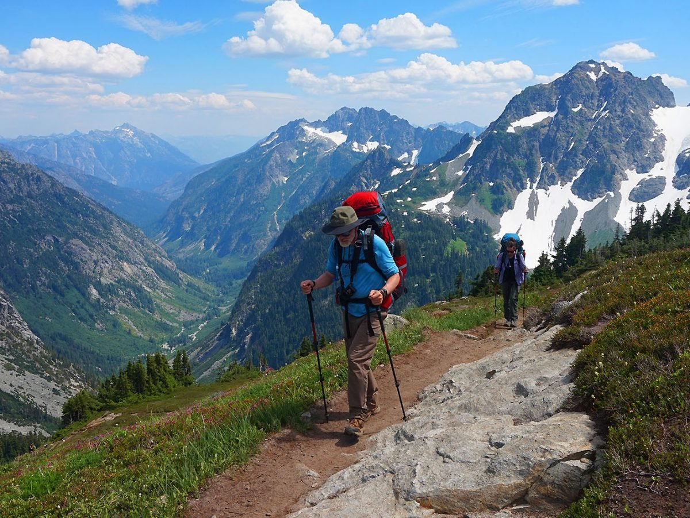

Hiking
Hiking is a beloved activity for many outdoor enthusiasts, and I count myself among them. What I love about
hiking is the sense of adventure and discovery that comes with exploring new trails and taking in
breathtaking views along the way. It allows me to challenge myself physically and mentally, and I often feel
a sense of accomplishment after completing a particularly challenging hike. Hiking also provides an
opportunity to connect with nature and escape the noise and distractions of daily life. It's a chance to
breathe fresh air, appreciate the beauty of the natural world, and experience a sense of calm and
tranquility that can be hard to find in the midst of our hectic lives. For me, hiking is a way to find inner
peace, push myself to new limits, and create lasting memories with friends and loved ones.